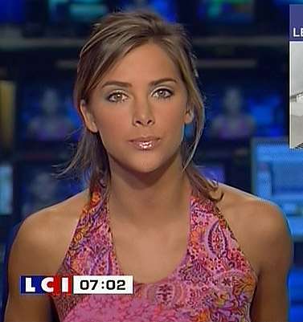

#16574 1 2007-08-05T20:25:33Z Guest I've asked one person for a desktop of her, and to his credit, his looks good. But I would like it if all the imaging people could do me a favor and have a go at it. Here are the few and very minor specifications.
- Must contain a picture of Mlissa Theuriau.
- Preferably of her face/head, but a full body is OK if nothing else available.
- Not too much clutter/detail. There can be some detail around her, but the emphasis should still be her.
- Any color scheme will do. Whatever you feel is best. Preferably not black.
- Other than that, do what you want! Do more than 1 if you're up for it!
I hope at least a few of you will have a go at it. I would really,
really appreciate it.
Here's an example of her...

Here are a few examples's thus far...
usaswim
321southpaw #351720 2 2007-08-05T20:53:25Z usaswim She's hot.
#351728 3 2007-08-05T20:59:05Z southpaw yeah she is. A little too much lipgloss in that picture tho.
#351742 4 2007-08-05T21:27:35Z Guest So are either of you going to give it the old college try?
#351746 5 2007-08-05T21:38:00Z southpaw I'm working on it stil obby. Sorry it is taking a while, you must be desperate [/kidding]

anyway, I am trying Infinitum's Vexel thingy, which is taking a while for me to figure out but hopefully it works in the end.
#351754 6 2007-08-05T21:54:28Z usaswim Heh, I'm doing it. She needs a tan, though.
#351761 7 2007-08-05T22:11:56Z southpaw haha, swim you should use the burn tool. Major time. I think obby should have seen this coming, that a bunch of people are probably going to make really weird hilarious desktops.
#351767 8 2007-08-05T22:28:03Z Guest Any dumb posts will be deleted.
#351783 9 2007-08-05T23:26:25Z catspride Not sure if you consider this a dumb post, but, I will give it a go.
#351788 10 2007-08-05T23:58:18Z usaswim It'll be done tonight, I think. It looks pretty good so far. High-res! 1280x1024 or something like that. Do you think it would look better if I reflected the flowers instead of continuing them? I can edit it.
Fin! Click the preview to go to the full sized version.
 Here's a .zip file with the .psd and a .jpg
Here's a .zip file with the .psd and a .jpg#351814 11 2007-08-06T01:58:10Z Guest Could it be 1024x768? Other than that it looks great!
#351818 12 2007-08-06T02:03:32Z usaswim Erm, doesn't it automatically shrink down?
#351819 13 2007-08-06T02:08:59Z Guest No, unfortunately not. It is the same as if it were on a bigger monitor, and the sides are cut off.
#351820 14 2007-08-06T02:13:40Z Twistkill No, unfortunately not. It is the same as if it were on a bigger monitor, and the sides are cut off.
...

Save the image to your computer and use it via the control panel... and if that doesn't work/you've already tried that, than that is very strange.
#351821 15 2007-08-06T02:15:36Z usaswim Here's a 1024x819. Sorry it's a bit too high, Photoshop is stupid and can't convert correctly. You should set mode to "stretch", I think.

#351824 16 2007-08-06T02:17:50Z Guest Ah. Perfect now. Thanks usaswim.
This does not mean you have to stop, for those who may think so. I would be extremely grateful if you still have more.
#351846 17 2007-08-06T03:36:29Z southpaw uhhh, swim?? I think when you resized it that you didn't unlink the height and width. there is a little LINKING button to the right of the "Image Size" adjustments, and if you click it then it unlinks the height and width and you can size both independently instead of dependently.
#351847 18 2007-08-06T03:46:07Z usaswim Uhhh...
Attachment (lost): post-20-1186371967.png
#351850 19 2007-08-06T03:50:55Z southpaw click there and you can resize the height and width of your image independently.
Attachment (lost): post-20-1186372255.png
#351853 20 2007-08-06T04:04:30Z usaswim SHADDUP
;_;
#351858 21 2007-08-06T04:37:47Z LittleViking Unlinking the proportions would cause the image to get squished. It would be better to resize with proportions linked and then crop afterward.
#351866 22 2007-08-06T05:08:36Z southpaw @LV:
very true. Your insight has been noted in my brain.
#352028 23 2007-08-06T17:22:31Z 7! usaswim you could just type 1024 in the 1280 box. It'll shrink it down proportionately.
#352060 24 2007-08-06T19:09:06Z southpaw usaswim you could just type 1024 in the 1280 box. It'll shrink it down proportionately.
yes, but 1280x1024 isn't proportional to 1024x768...
1280/1024=1.25
1024/768=1.333
so yeah, that's why it is 819 instead of 768.
#352120 25 2007-08-06T22:33:52Z 7! Oh yeah. 1280x960 is.
#352353 26 2007-08-07T15:15:10Z Tsukatu "Average" monitors these days are best used with 1280x1024, which is a 5:4 ratio.
Use that instead of the old 4:3 nonsense (though I have, like, twenty times the 4:3 wallpapers than I do 5:4).
#352460 27 2007-08-07T19:51:55Z Samrat16 I'm on it! I need some time, though...
#353361 28 2007-08-10T04:14:53Z Guest Anyone have any news of any headway they are making?
#353370 29 2007-08-10T04:27:46Z Turtle No. But I have a question. Are you willing to resize it?
Edit: Just so you know, if so, I am done, but there is still some background.
All I can use is paint. Sorry.
#353406 30 2007-08-10T05:28:17Z smartalco "Average" monitors these days are best used with 1280x1024, which is a 5:4 ratio.
Use that instead of the old 4:3 nonsense (though I have, like, twenty times the 4:3 wallpapers than I do 5:4).
o_O, why in the heck would you want a lower ratio? widescreen rules!, my monitor is 1440x960, screw 5:4 or 4:3, i have 3:2!
#353557 31 2007-08-10T15:42:11Z Tsukatu "Average" monitors these days are best used with 1280x1024, which is a 5:4 ratio.
Use that instead of the old 4:3 nonsense (though I have, like, twenty times the 4:3 wallpapers than I do 5:4).
o_O, why in the heck would you want a lower ratio? widescreen rules!, my monitor is 1440x960, screw 5:4 or 4:3, i have 3:2!
...
Cuz even though 5:4 is a lower ratio than 4:3, a standard screen size of '1280x1024' is bigger than a standard screen size of '1024x768'?
#353677 32 2007-08-10T21:38:05Z Guest You know, my 1024x768 monitor is fine for me. 4:3 should be fine for everyone else.
#353982 33 2007-08-11T12:32:12Z 7! 1024x768 is proportional to 1280x960, NOT 1280x1024. I feel like a broken record.
#354258 34 2007-08-11T23:19:47Z Tsukatu 1024x768 is proportional to 1280x960, NOT 1280x1024. I feel like a broken record.
If that was directed at me, I have already openly acknowledged that 1280x1024 is 5:4 and 1024x768 is 4:3.
My point was merely that 1280x1024 has more viewing area (by about 524,288 pixels) than 1024x768.
#354506 35 2007-08-12T14:42:36Z Guest I'm going to go on a whim and say no one has any complete wallpapers yet?
#356274 36 2007-08-17T04:16:50Z Shrukan Uh. Sorry. No can do. I'm not good with wallpapers. Once again, sorry.
#356585 37 2007-08-18T01:57:37Z Guest Wa-. Bu-. HUH?
What could possibly possess you to post in a thread just to say that you can't contribute to it? This is a verbal warning, Shrukan. Use your head next time.
#356808 38 2007-08-18T19:56:33Z Guest Metanet, you have failed me.